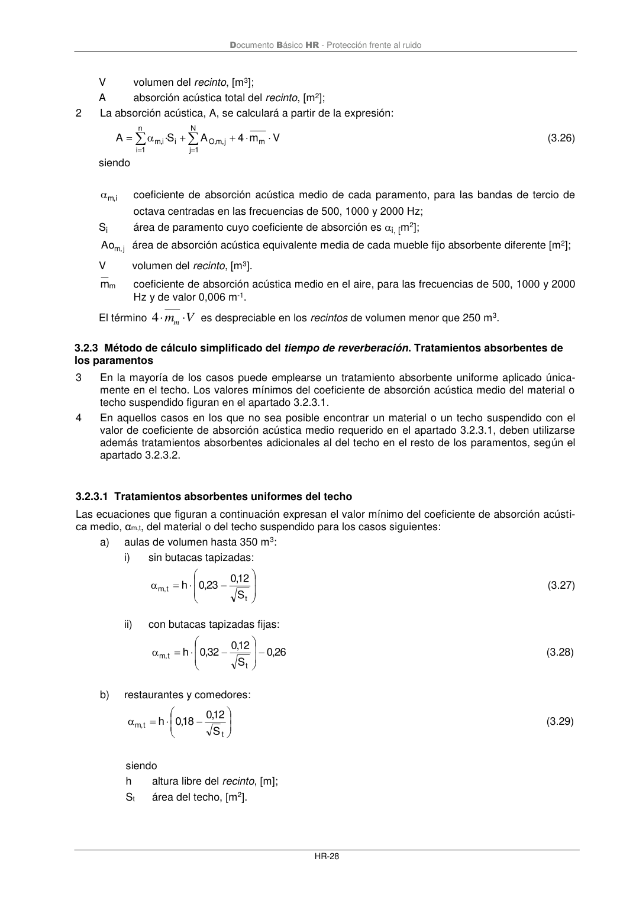

DB-HR Protección frente al ruido · edición 2019-12-20 · capa oficial
Documento DB-HR-oficial · SHA-256 del PDF a67baeca5138bb1f121f797d23a79a4557bd9ac4abacd954024893e05411eeab
Copia fiel del PDF fuente · Fuente oficial
Ficha de la disposición en la fuente oficial
Formatos: JSON del segmento · Markdown
3.2.3 Método de cálculo simplificado del tiempo de reverberación. Tratamientos absorbentes de los paramentos los paramentos 3 En la mayoría de los casos puede emplearse un tratamiento absorbente uniforme aplicado única- mente en el techo. Los valores mínimos del coeficiente de absorción acústica medio del material o techo suspendido figuran en el apartado 3.2.3.1. 4 En aquellos casos en los que no sea posible encontrar un material o un techo suspendido con el valor de coeficiente de absorción acústica medio requerido en el apartado 3.2.3.1, deben utilizarse además tratamientos absorbentes adicionales al del techo en el resto de los paramentos, según el apartado 3.2.3.2.
